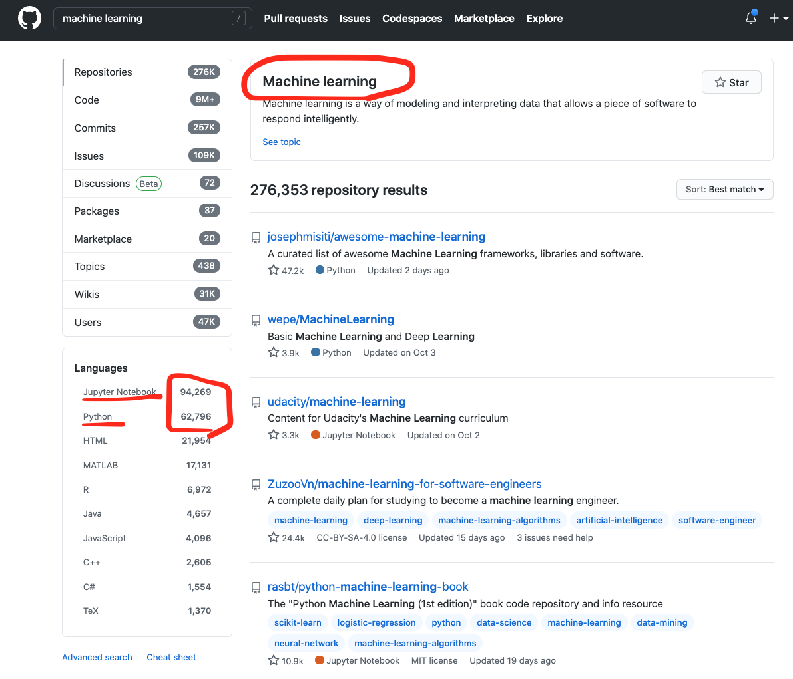
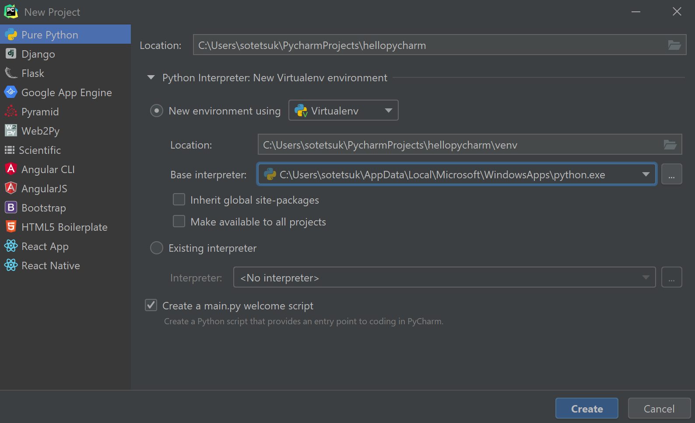
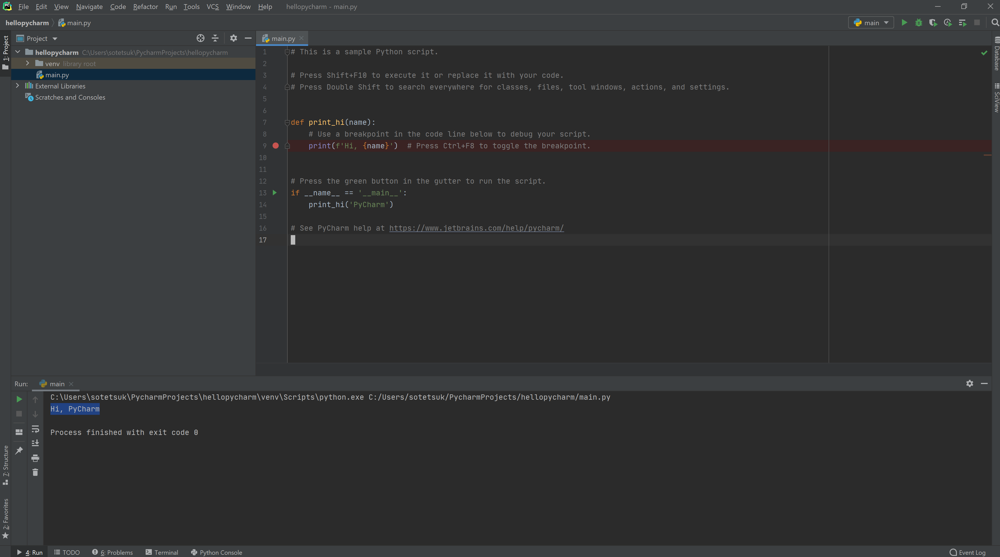
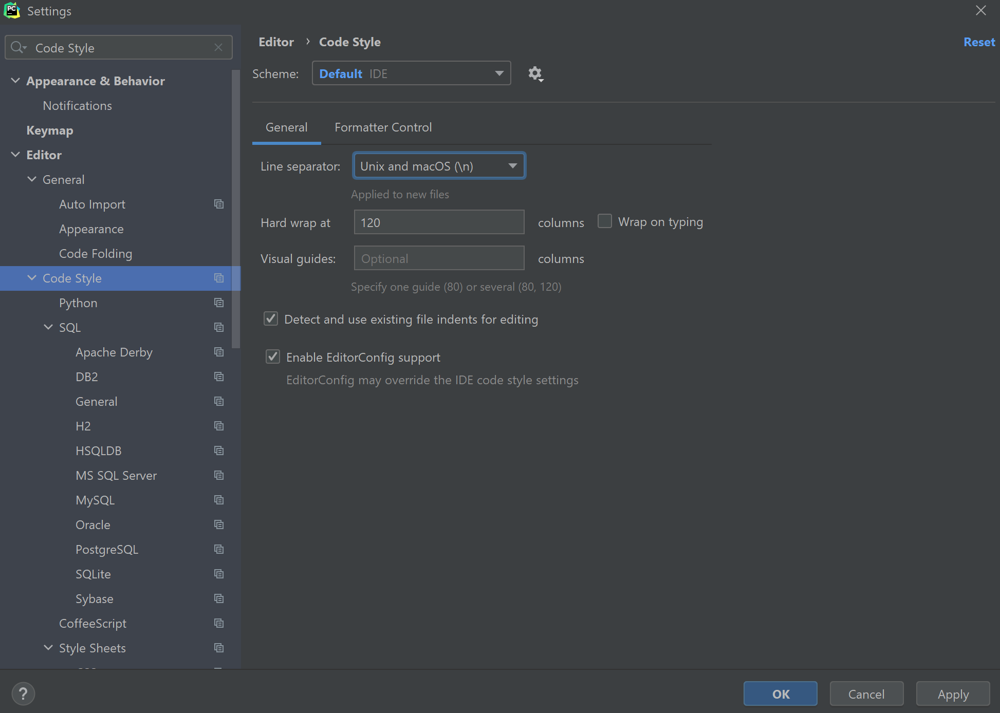

Python入門
 なぜPythonを学ぶのか
なぜPythonを学ぶのか
様々なプログラミング言語がありますが、Pythonは今最も学ぶ価値の高い言語の一つです。Pythonは人工知能やデータサイエンスとの相性が良く、学習コストも低いため、最初に学習するプログラミング言語として最も優れていると言って過言でありません。実際、マサチューセッツ工科大学 (MIT) では、コンピュータサイエンス入門コースでPythonを採用しています。学習コストが低いと言っても、Pythonの機能に何か制限があるというわけではなく、最先端の人工知能研究からWebサービスの開発に至るまで、様々な場面で最大限に活用できます。ここでは、Pythonの基本的な文法とプログラミングの基本を学びましょう。
Pythonと人工知能
GitHubにおいて、"Machine learning"で検索をすると、PythonとJupyter Notebookで書かれたリポジトリの数が、他を圧倒しています。 もはや、Pythonは人工知能分野における共通言語と言っても過言ではありません。

Pythonを使っている有名なサービス例
PythonはWebサービスの開発においても人気の高い言語の一つです。多くの有名サービスがPythonをバックエンドで活用しています。 人工知能技術の産業界への輸出がこれからも続くことを考えれば、この傾向は今後も続くと予想するのが自然でしょう。
 事前準備（環境設定）
事前準備（環境設定）
Pythonを開発・実行する環境としては、ローカルマシン（自分の手元のPC）に加えて、サーバ上のJupyter Notebook形式を選択することもできます。必要に応じてローカルマシンと使い分けてみましょう。
Google Colab
Google ColabはGoogleが提供するJupyter Notebook形式でのPython実行環境サービスです。Google Colabを活用すれば、環境構築の労力ゼロでPythonを使い始めることができます。特に、データの集計や可視化などの場面では、Google Colabのようなノートブック形式でPythonを実行するのが便利です。また、無料でGPUが利用できるので、深層学習モデルの学習にも使えます。
学習教材で2.の東大の教材を選択する場合は、Google Colabだけで簡潔するため、ローカルマシンの環境構築 (PyCharmの導入) は後回しにしても問題ありません。
PyCharm
PyCharmは非常に高性能なローカルマシンでの統合開発環境です。WindowsでもMacでも、まずPyCharmをインストールして下さい。Google Colabより導入に一手間かかりますが、ある程度規模の大きいソフトウェアの開発では、ローカルマシンで統合開発環境を使うのが必須になります。学生は無料でプロフェッショナル版を使うことができます。
モダンなPython開発環境としては、他にもVisual Studio Codeが選択肢に入りますが、拡張機能や設定が必要なので、初学者にはデフォルトで最初から便利なPyCharmがオススメです。
WindowsではUNIXコマンドの学習のときにインストールしたWSLと連携して使って下さい。SSH を使用して WSL ベースのリモートインタープリターを作成する | PyCharm
PyCharmをインストールした後、新しいプロジェクトを作成してみてテストしてみましょう。
PyCharmをインストールした後、新しいプロジェクトを作成してみてテストしてみましょう。 New Projectを選択し、次の画面を参考に、virtualenvを使ってPythonインタプリタを使うようにしてください。

このとき、Pythonのインタプリタがないと言われた場合、エラーメッセージにしたがって、Microsoft storeからPython3.9（あるいは3.8）をインストールして下さい。 Pythonインストール後、緑色の三角の実行ボタンを押してみて、Pythonが動くことを確認しましょう。

最後に、設定から改行コードをUNIXに揃えるよう設定して下さい。

 学習教材
学習教材
次の教材から好きなものを選んでPythonの文法とプログラミングの基礎について勉強しましょう。2.3.4.5.のどれか一つ選択して学習してみましょう。
- はじめてのPython | ドットインストール （有料）
- このドットインストールのコースは90分もかからないと思うので、短時間で達成感が得られると思います。基本的にこの教材で素早く全体像を掴んでから2.3.4.のどれかで本格的に勉強していくのが良いと思います。
- Pythonプログラミング入門 #utpython | 東京大学 数理・情報教育研究センター
- Colab上だけで簡潔するので、Python文法やプログラミングの基礎についてのみ集中できる。
- プログラミング演習 Python 2019 | 京都大学学術情報リポジトリ KURENAI 紅
- ビデオなしの教材なので、1.を勉強した後であれば適宜読み飛ばして行けると思います。GUIのプログラミングや、Tic-Tac-Toeを作るといった面白い題材が多い。
- Introduction to Computer Science and Programming in Python | MIT OpenCourseWare
- 英語が問題ない方はこちらがオススメです。より本格的なコンピュータサイエンス入門になっています。
- Python3入門 | ドットインストール（有料）
- ドットインストールのより詳細なPython入門です。有料ですが、文法だけ学ぶという観点ではこれが一番いいかなと思います。
 演習
演習
これらの演習問題を通じて、基本的な制御構文やデータ構造 (if, for, while, list, dict, set) が使いこなせるか確認しましょう。
 AtCoder Beginners Selection | AtCoder の問題10問をPythonで解いてみましょう。
AtCoder Beginners Selection | AtCoder の問題10問をPythonで解いてみましょう。
アルゴリズム実技検定 (PAST) の過去問題を解いてPythonで解いてみましょう。
- 第一回 アルゴリズム実技検定 のA~F（計6問）
- 第二回 アルゴリズム実技検定 のA~F（計6問）
- 第三回 アルゴリズム実技検定 のA~F（計6問）
- 第四回 アルゴリズム実技検定 のA~F（計6問）
これは第一回A, 第二回A, ... という順番で解いていくのがいいかと思います。
追加で必要な知識
上記の問題は基本的に基本的なPythonの知識だけで解ける問題のはずですが、いくつかの問題は、以下のような追加の知識が必要か、あると簡単に解くことが出来ます。確認してみましょう。
- itertools.permutations | docs.python.第4回Eorg - 順列の列挙が行えます（第4回E）
- heapq | docs.python.org - どのようなデータ構造か、自分で調べてみましょう（第2回F）
前回、UNIXコマンドで実行した第2章: UNIXコマンド | 言語処理100本ノックの問題を、今度はPythonで実装、実行してみましょう。
コマンドを作ると言っても、あまり凝ったものにする必要はなく、例えば最初の問題なら次のような回答で大丈夫です。
import sys
file_name = sys.argv[1]
cnt = 0
with open(file_name, "r") as f:
for line in f:
cnt += 1
print(cnt)
追加演習 (optional)
問題演習が足りないと感じる人は、AtCoderで引き続き過去問題を解いて見て下さい。 AtCoder Beginner Contest (ABC) の新形式（ABC126~)のA, B, C問題を高速に解けるよう練習してみて下さい。
過去問題一覧はAtCoder Problemsから確認できます。